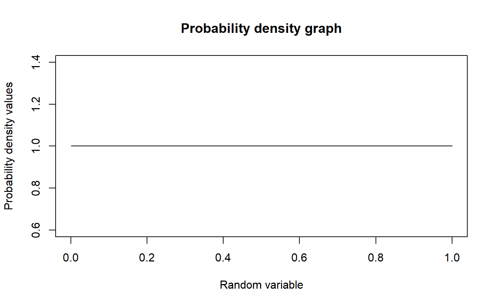
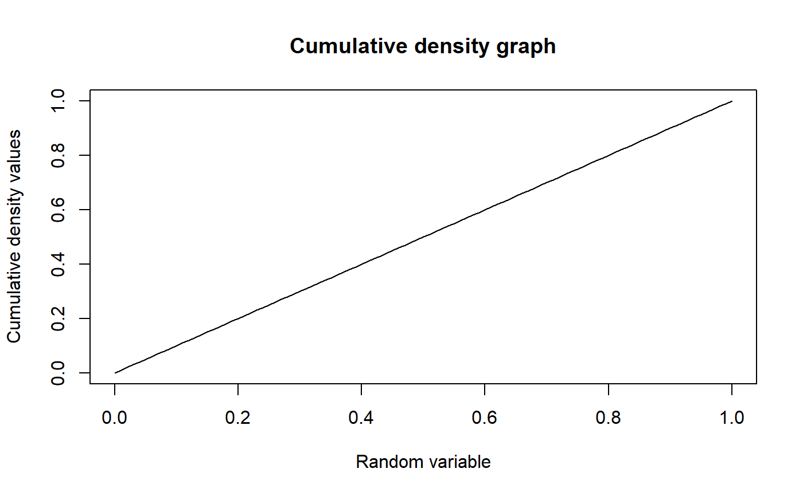

These functions provide the ability for generating probability density values, cumulative probability density values and moments about zero values for the Uniform Distribution bounded between [0,1].
mazUNI(r)
| r | vector of moments |
|---|
The output of mazUNI gives the moments about zero in vector form.
Setting \(a=0\) and \(b=1\) in the Uniform Distribution a unit bounded Uniform Distribution can be obtained. The probability density function and cumulative density function of a unit bounded Uniform Distribution with random variable P are given by
$$g_{P}(p) = 1$$ \(0 \le p \le 1\) $$G_{P}(p) = p$$ \(0 \le p \le 1\)
The mean and the variance are denoted as $$E[P]= \frac{1}{a+b}= 0.5$$ $$var[P]= \frac{(b-a)^2}{12}= 0.0833$$
Moments about zero is denoted as $$E[P^r]= \frac{e^{rb}-e^{ra}}{r(b-a)}= \frac{e^r-1}{r} $$ \(r = 1,2,3,...\)
NOTE : If input parameters are not in given domain conditions necessary error messages will be provided to go further.
Horsnell, G. (1957). Economic acceptance sampling schemes. Journal of the Royal Statistical Society, Series A, 120:148-191.
Johnson, N. L., Kotz, S. and Balakrishnan, N. (1994) Continuous Univariate Distributions, Vol. 2, Wiley Series in Probability and Mathematical Statistics, Wiley
#plotting the random variables and probability values plot(seq(0,1,by=0.01),dUNI(seq(0,1,by=0.01))$pdf,type = "l",main="Probability density graph", xlab="Random variable",ylab="Probability density values")#> [1] 1 1 1 1 1 1 1 1 1 1 1 1 1 1 1 1 1 1 1 1 1#> [1] 0.5#> [1] 0.08333333#plotting the random variables and cumulative probability values plot(seq(0,1,by=0.01),pUNI(seq(0,1,by=0.01)),type = "l",main="Cumulative density graph", xlab="Random variable",ylab="Cumulative density values")#> [1] 0.00 0.05 0.10 0.15 0.20 0.25 0.30 0.35 0.40 0.45 0.50 0.55 0.60 0.65 0.70 #> [16] 0.75 0.80 0.85 0.90 0.95 1.00#> [1] 0.5000000 0.3333333 0.2500000#only the integer value of moments is taken here because moments cannot be decimal mazUNI(1.9)#> [1] 0.5